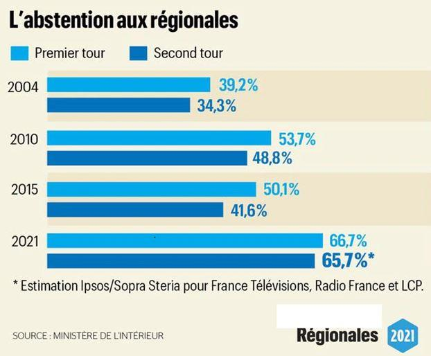
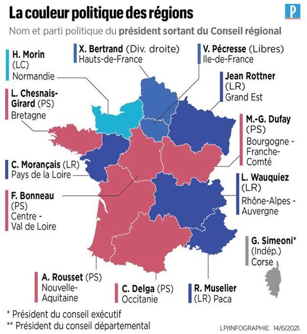
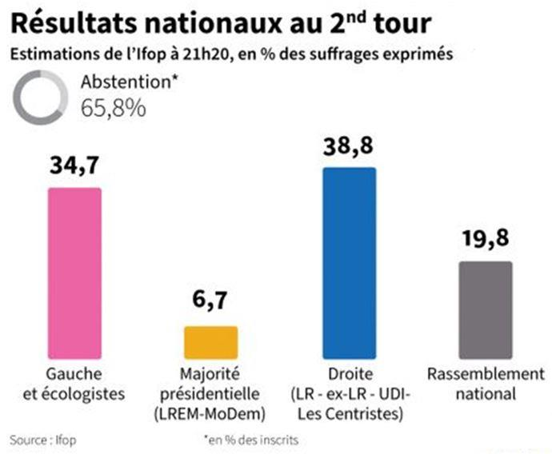

Dans son discours prononcé à Bruneval le 31 mars 19471, le général De Gaulle tenait, devant plusieurs milliers de personnes, les propos suivants :
« Le jour va venir où, rejetant les jeux stériles (des partis politiques) et réformant le cadre mal bâti où s’égare la nation et se disqualifie l’État, la masse immense des Français se rassemblera sur la France ».
Ce jour semble venu.
Les résultats des élections régionales sont sans appel. Les Français ne veulent plus de ce système dans lequel les partis politiques, au travers des multiples instruments de filtres et de contrôle que sont les commissions d'investitures, imposent les candidats de leur choix, souvent désignés par des critères qui n'ont rien à voir avec le service des citoyens qui devrait être leur unique préoccupation.
Et cela, les Français l'ont clairement exprimé par une abstention massive le dimanche 20 juin, à l'occasion des élections régionales.
Mauvaise date
Déplacées dans le temps du mois de mars, durant lequel elles auraient dû se tenir, au mois de juin, elles se trouvaient alors dans le champ gravitationnel de l'élection présidentielle de mai 2022, et cela n'était pas sans conséquences.
Prévue pour déterminer les personnes qui allaient se trouver en charge de l'administration de nos régions, dans un domaine de compétences très strictement limité de par le pouvoir exécutif national, la campagne électorale eut un déroulement faussé par l'épidémie qui s'était répandue depuis le mois de mars 2020.
Un résultat non prévu pourtant prévisible
Les contacts entre électeurs et candidats se réduisirent à leur plus simple expression et ne permit guère aux premiers de faire connaissance avec les seconds. C'était une sorte de « chèque en blanc » que les différents partis politiques demandaient qu'on veuille bien leur signer, persuadés que les électeurs voteraient par discipline de parti et non par choix personnel.
Une campagne outrancière de sondages, ne mentionnant souvent que le parti d'origine au détriment des personnes candidates, acheva cet « anonymisation » du produit proposé à la vente...
Le résultat fut une abstenions-record, au-delà de tout ce qui était pensable. Et, seconde conséquence, les électeurs votèrent pour ceux qu'ils connaissaient, c'est-a-dire les sortants.
Un jeu faussé
Cajolé par des sondages le donnant de mieux en mieux placé, le Rassemblement National humait déjà l'air de la victoire qui semblait se préciser de jour en jour, pensant qu'il allait franchir une étape dans la course vers l’Élysée. Plusieurs régions semblaient acquises, ou en passe de l'être et cela allait permettre de crédibiliser les capacités de gestion de collectivités importantes, souvent mises en doute par ses adversaires. On comprend leur stupeur, pour ne pas dire leur désarroi, à l'annonce des résultats, qui mettaient un coup d'arrêt aux rêves de victoire.Pour faire bonne figure, il fallait trouver une explication qui, naturellement, ne devait mettre en cause ni le parti, ni son fonctionnement. Ce furent donc les électeurs qui portèrent le chapeau. Ceci rappelait un petit côté Berthol Brecht, qui, constatant l'échec du Parti Communiste, proposait de « dissoudre le peuple » qui n'avait pas réagi comme il aurait dû le faire...
Dans l'esprit de ces bonnes âmes, il apparaissait impensable que leurs électeurs les aient abandonnés, persuadés qu'ils étaient d'avoir tout fait pour eux. Ne s'étaient-ils pas dédiabolisés, lissé toutes leurs aspérités, châtié les comportements non politiquement corrects, écarté tous ceux qui n'étaient pas « dans le droit-fil » de la pensée aseptisée, sésame incontournable devant ouvrir la porte de l’Élysée ?
Seule explication possible : ils avaient simplement oublié d'aller voter.
D'où la remontrance à peine voilée : on passe l'éponge pour ce soir, mais gare à vous si vous récidivez dimanche prochain ! On peut douter de l'efficacité...
Une autre approche eut été possible, celle de la prise en compte de la situation. Une sorte de « je vous ai compris » il est vrai peu usitée car porteuse de trop mauvais souvenirs. Hypnotisés par les mauvais chiffres, il était plus simple de comparer les résultats à ceux de 2015 afin de se persuader que rien n'était joué et qu'il suffisait de faire voter l'électorat d'il y a six ans pour rétablir la situation.
De Gaulle disait « qu'il n'y avait pas de pire déformation de l'esprit que de voir les choses non pas telles qu'elles sont, mais telles qu’on voudrait qu'elles soient... »
Les autres partis ne sont pas mieux
Les autres mouvements politiques auraient cependant tort de se réjouir. Leur santé n'est pas meilleure.
Sur le papier, certains remportent des succès quasi-inespérés, mais ce qui vaut pour le RN est également valable pour eux. Aucun ne réalise une percée mémorable et abstentionnisme semble avoir sévi d'une façon uniforme. Cela n'affecte pas les pourcentages, car personne ne veut se hasarder à remarquer que, une fois pondérés par l'effet de l'abstention, les chiffres des suffrages exprimés sont tellement bas que se pose en filigrane le problème de la démocratie. Un seuil quelquefois inférieur à 10% peut-il légitimement permettre d'exercer le pouvoir sur une collectivité ?
Il est toujours possible d’interpréter notre Constitution en disant qu'il n'existe pas de nombre d'électeurs requis, et que seul le critère majoritaire est à prendre en compte, la réalité se manifestera tôt ou tard. Notre Constitution ne permet pas, (pas plus que tout autre texte ayant reçu l'approbation de l'immense majorité des Français, ce que de Gaulle évoquait en demandant « un OUI massif ») de gouverner sans une réelle adhésion populaire.
On peut, bien sûr, jouer le cynisme des textes, mais pour combien de temps ?
Second tour des régionales : un résultat en trompe l’œil
Quiconque écoutant les différents débats télévisés le soir 27 juin aurait pu se croire ramené une vingtaine d'années en arrière, du temps des partis politiques ayant « pignon sur rue » à cette époque.
Mais l'illusion de ce voyage dans le passé masquait une réalité beaucoup plus actuelle ; surplombant tous les résultats électoraux annoncés au fur et à mesure des dépouillements, s'étendait l'ombre invisible mais menaçante d'une abstention généralisée atteignant un niveau propre à remettre en cause le principe même de la démocratie.
Un échantillon de votants réduit
Car, même si la démocratie ne reconnaît que les suffrages exprimés, et que les vainqueurs se félicitaient de leur victoire en s'auto-congratulant, comment ne pas s'interroger sur cette désaffection sans précédent ?
La lecture des chiffres relatifs, qui n'avaient rien d'extraordinaires, montrait que les partis « classiques » se partageaient les majorités régionales à l'aune du vieux clivage gauche-droite séculaire de notre pays.
Mais une autre lecture devrait singulièrement inquiéter les responsables de ce vieux monde politique. Rapportés non plus aux bulletins de vote, mais au nombre des électeurs potentiels, pas un seul de ces « parti-dinosaures » n'atteint la barre du dixième de ce corps électoral.
Les cyniques, et ils sont légion, argumenteront qu'après tout, personne n'a interdit à ces gens d'aller voter et qu'il est impossible d’interpréter leur démarche. C'est très commode, surtout pour ceux qui trouvent intérêt dans la situation.
Une analyse s'impose
Après chaque scrutin, les politologues nous affirment doctement que certaines élections ne passionnent pas les foules, que les enjeux sont mal connus, qu'il fait trop beau ou pas assez, bref, que les excuses pour ne pas se rendre au bureau de vote sont nombreuses.
Cependant, on ne parle jamais de ce qui paraît pourtant évident, qui est que les gens ne trouvent pas d'offre politique correspondant à leurs aspirations. Plus grave encore, lorsque leur avis est demandé, on refuse de le prendre en compte. Ce fut le cas avec le Traité Constitutionnel de l'Union Européenne, présenté le 29 mai 2005 et refusé par 55% des électeurs qui, pour cette fois, s'étaient déplacés en masse. L'impensable s'était alors produit, par un tour de passe-passe qui tordait littéralement la Constitution, le résultat de ce scrutin s'était trouvé inversé par l'adoption par le Congrès d'une loi reprenant au mot près le contenu du texte rejeté par les Français. Une telle forfaiture n'aurait jamais dû, dans un pays où les « valeurs républicaines » sont constamment exhortées, pouvoir se produire.
Mais la morgue et le dédain coutumiers de nos « élites » les avaient incités à croire que le bon et brave peuple français ne verrait rien. Comme disait Courteline dans « le sapeur Camembert » :
« Passées les bornes, il n'y a plus de limites » et, depuis, tout semble permis.
Voici plus de 16 ans qu'aucun référendum digne de ce non nous a été proposé. Pourtant, les sujets ne manquent pas. La nouvelle « gouvernance » (je déteste ce mot) s'est imposée à nous. La souveraineté populaire est devenue une coquille vide, et a progressivement fait place au gouvernement des experts, forcément beaucoup plus qualifiés, pour savoir ce qui est bon pour nous.
Nous nous sentons de plus en plus exclus des mécanismes de prise de décision et cela se traduit par une désertion massive des électeurs.
L’abstention, signe avant-coureur du soulèvement ?
La désaffection de nos concitoyens pour la chose politique ne signifie pas qu'il ne se préoccupent pas de l'avenir de la France. Bien au contraire, ils manifestent de plus en plus de doutes sur la capacité des dirigeants à stopper le déclin de la France. Ils ne leur font plus confiance et sont de plus en plus nombreux à l'exprimer. Ils ne veulent plus des discours creux et lénifiants et ne pardonnent pas les trahisons qu'ils ont subi depuis tant d'années. La confiscation du référendum de 2005, supplantée par le tour de passe-passe du traité de Lisbonne de 2008, leur a montré combien le peuple était quantité négligeable et comment on pouvait le duper. Ceux qui ont fait cela devront tôt ou tard rendre des comptes.
Pendant des décennies, on leur a vendu que l'avenir de la France passait par l'intégration européenne, elle-même appartement témoin de la mondialisation heureuse. La majorité d'entre eux n'y croient plus.
Revenir au fonctionnement « normal » de la Vème République.
L'acte majeur est l'élection présidentielle. On dit souvent que cela doit être une rencontre entre le peuple et la personne qu'il choisira pour diriger le pays. Ce ne peut-être qu'une relation de confiance établie entre les deux, sans intermédiaire. En interposant les partis, cela a faussé cette relation. Certains d'entre eux, comme le RPR, renommé UMP (signifiant au départ Union pour une Majorité Présidentielle) avant de devenir LR, ayant perdu par deux fois les élections présidentielles, ne trouvent leur cohésion interne que dans l'exercice du pouvoir qui, seul, empêche leur éclatement.
Or, la confiance donnée doit être périodiquement renouvelée, et cette seconde forme de souveraineté du peuple est fondamentale. N'en déplaise aux théoriciens, souvent nostalgiques de la IVème République, ce pouvoir doit être capable de supporter cette remise en question.
La majorité des Français attendent une perspective
Trop d'éléments inquiétants se sont accumulés ces dernières années. Beaucoup de questions, pourtant fondamentales, restent sans réponses. Or, ces réponses sont impératives et de simples pirouettes oratoires ne suffiront pas. La campagne présidentielle qui s'ouvre maintenant sera l'Agora prédestinée pour voir apparaître de nouvelles perspectives et probablement de nouveaux visages qui sauront, au travers des idées qu'ils incarneront, redonner au peuple français sa confiance en lui-même et en son propre destin.
Chaque fois que la France s'est trouvée menacée dans son existence même, les Français ont toujours su trouver en eux-mêmes les hommes et les moyens nécessaires pour faire rebondir ce pays.
Il en sera de même dans les prochains mois.
Que peut-il se passer ?
Pour certains, le mieux serait que tout continue sans changement. Après tout, cela dure depuis 40 ans et l'alternance apparente gauche-droite avait procuré à nos élus un certain confort de vie, d'autant plus que les postes à pourvoir sont nombreux.
Pour d'autres, jusqu'à présent restés silencieux, le malaise s'accentue. Placides mais éveillés, nombreux sont ceux qui ne croient plus aux belles promesses, quels que soient ceux qui les énoncent.
Le Rassemblement National, porteur de l'espoir de renouveau il y a quelques années, est maintenant considéré comme faisant partie du système qu'il entendait dénoncer. C'était le risque inhérent à une dédiabolisation « séquentielle » qui était censée s'adresser uniquement aux nouveaux sympathisants.
Quant aux « anciens », ils étaient supposés ne rien voir et voter comme avant. Cela ne pouvait pas fonctionner et va finalement « remettre sur le marché » un électorat certes désemparé mais désireux de ne pas renier ses convictions. Mais ils ne sont pas les seuls. Beaucoup de Français ne veulent pas voir la France disparaître en tant que nation. La souveraineté européenne ne leur parle pas et ils n'adhèrent plus au discours lénifiant de la mondialisation heureuse que leur tient les partisans d'un gouvernement mondial dont la Commission Européenne serait une sorte d'appartement-témoin.
On ne peut douter qu'il existe aujourd'hui dans notre pays un courant réellement « patriote » qui prend conscience progressivement de ce que les partisans du monde « globalisé » tentent de lui cacher.
On peut même penser que le périmètre de ce courant est largement dessiné par ceux qui ont voté « non » en 2005 et sont restés silencieux depuis.
Que veut cette majorité silencieuse ?
Une chose simple, probablement trop simple pour nos élites mondialistes. Ceux qui « fument des clopes et roulent en Diesel » veulent qu'on leur parle de la France et de son avenir et si le mot « Patrie » a encore un sens. Ils savent parfaitement, même si les médias « bien pensants » n'en parlent jamais, qu'à la surface du globe les nations ne veulent pas disparaître et qu'il n'y aura pas, contrairement à un courant de pensée purement occidental, de « gouvernement mondial » A cet égard, la perspective du « great reset » et la pandémie que nous subissons nous incitent fortement à redonner à notre pays les moyens d'une véritable indépendance que les choix politiques de la classe actuellement dirigeante ont progressivement aliénée. Oui, nous voulons croire en l'avenir de la France, nation souveraine, et dans le peuple français sans lequel la France ne serait pas ce qu'elle est.
Celui ou celle qui, rompant avec la vision traditionnelle d'un salut de notre pays qui ne pourrait se trouver que par une sorte de fusion dans une Europe intégrée qui ôterait aux peuples qui y vivent toute forme de souveraineté, trouvera certainement avec lui « la masse énorme du peuple français qui se rassemblera sur la France »
Partager cette page